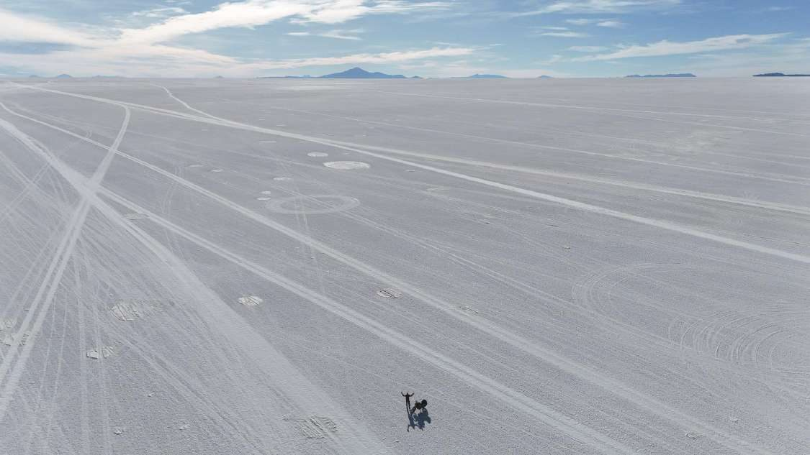
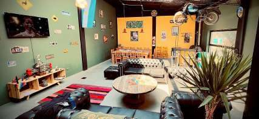

Avant le grand départ
Bienvenue, copilote.
Dans quelques semaines, quinze jours de piste entre Salta et Cusco. En attendant, voici le site qui va accompagner le voyage — et qui a besoin de toi. Trois arrêts, cinq minutes : ce que tout le monde voit, comment on y dépose un souvenir, et ce qui se passe une fois la page tournée.
3 036 km · 875 km de piste · 4 pays · 15 jours

Étape 1 · Ce que tout le monde voit
Le site, sans rien à installer
Une carte qui porte tout le parcours, une fiche par jour, et une frise en bas qui est en réalité le profil d'altitude du voyage entier. Personne ne se connecte pour regarder — ça s'ouvre, et c'est déjà là.
Salta → Cusco
Aventure des 4 Nations
Le profil, les 15 jours et leurs souvenirs, en une seule barre.
Salta - Début du voyage
0 km · altitude 1 183 m
Dans une vallée fertile au pied de la Cordillère des Andes orientale se trouve Salta, la deuxième plus importante cité du nord de l'Argentine…

- Église San Francisco — façade et murs rouges, emblème de la ville.
- Locaux Vintage Rides — dîner barbecue et remise des motos.
-
1
La frise
Le profil d'altitude, les quinze journées et le nombre de souvenirs de chacune, d'un seul tenant. On clique un jour pour y aller directement.
-
2
La carte
Trois fonds — satellite, relief, plan. Elle reste la seule vraie source de lumière de la page : le reste s'assombrit exprès, comme le ciel en altitude.
-
3
La fiche du jour
Deux onglets. Elle s'ouvre sur les souvenirs quand la journée en a reçu, sur le récit sinon — c'est ce qu'on vient chercher en premier.
-
4
Sur téléphone
La fiche se tire du doigt, à trois hauteurs : repliée, à mi-hauteur, pleine — sans jamais masquer la carte.
Étape 2 · Comment on y laisse un souvenir
Une note, une photo, depuis le terrain
Chaque étape porte un bloc où les compagnons de route laissent des notes, des photos, des vidéos — en direct, souvent sans réseau. C'est la seule partie du site qui n'est pas figée : elle parle à un petit service qui range tout pendant le voyage.
Salta → Cusco
Aventure des 4 Nations
« Premier dîner barbecue avec toute l'équipe, quelle énergie ce soir. »
Première fois
Compagnon
✓ mémorisé-
1
Une identification légère
Un prénom, et le mot de passe du groupe donné de vive voix avant le départ. Demandé une fois par téléphone, puis retenu.
-
2
Texte, photo, vidéo
Autant de fichiers qu'on veut par souvenir. Les photos sont recompressées automatiquement par le téléphone avant l'envoi.
-
3
Le filet de sécurité
Pas de réseau dans le Sud Lipez ou sur le salar ? L'envoi reste sur le téléphone et repart tout seul dès que ça capte. Rien ne se perd.
-
4
C'est à vous
Chacun modifie ou supprime ses propres souvenirs, depuis l'appareil qui les a postés — visible seulement sur ce téléphone-là.
Étape 3 · Ce qui se passe une fois la page tournée
Les coulisses, réservées à un mot de passe
Une page à part, que personne ne trouve par hasard, où n'importe quelle contribution peut être retirée — au cas où.
Salta → Cusco
Modération
← Le site
Camille · J1« Premier dîner barbecue avec toute l'équipe. »
Julien · J7photo — traversée du salar
-
1
Une page à part
admin.html, invisible des moteurs de recherche, protégée par un second mot de passe — différent de celui du groupe, connu de vous seul·e. -
2
Le menu des journées
Les quinze jours, avec le nombre de contributions de chacun — y compris ceux restés vides : le savoir, c'est déjà une information.
-
3
Tout supprimer
N'importe quelle contribution peut être retirée d'ici, texte ou média — même si elle n'est pas la vôtre.
Arrivée
Te voilà copilote.
- 1Le site — une carte, une frise, une fiche par jour. Rien à installer, rien à créer.
- 2Les souvenirs — un prénom et le mot de passe du groupe suffisent. Rien ne se perd, même sans réseau.
- 3Les coulisses — une page à part, un mot de passe différent, pour tout garder sous contrôle.
Le vrai site est juste à côté — tu sais déjà où regarder.
Pour la route (bonus)
Un tout petit quiz
Sur le salar, le réseau coupe en pleine rédaction d'un souvenir. Il se passe quoi ?
Qui peut supprimer le souvenir de quelqu'un d'autre ?
Le mot de passe du groupe et celui de l'administration, c'est…